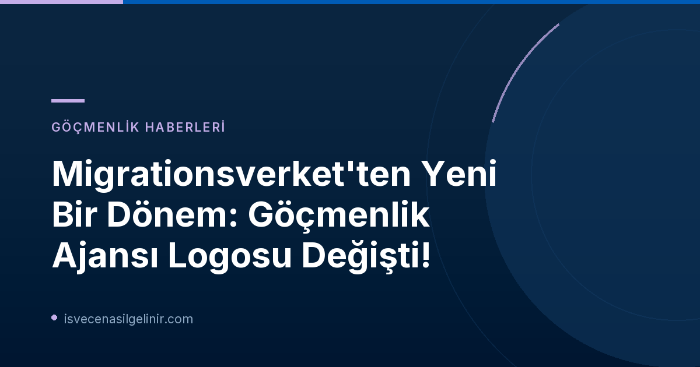

Neden Bir Logo Değişikliği? Migrationsverket'in Yeni Kimliği
İsveç Göçmenlik Ajansı (Migrationsverket), yeni logosuyla kurum kimliğini güçlendirme ve devletle olan bağını daha net bir şekilde ortaya koyma hedefinde. Bu değişim yalnızca estetik bir güncelleme değil, aynı zamanda kurumun misyonu ve ulusal ile uluslararası arenadaki konumu hakkında önemli mesajlar taşıyor.
Heraldistik Arma Ne Anlama Geliyor?
Yeni logonun kalbinde, tüm İsveç devlet kurumlarının kullanma hakkına sahip olduğu kraliyet tacı ve kalkan (heraldistik arma) yer alıyor. Heraldistik armalar, kamu faaliyetleriyle güçlü bir şekilde ilişkilendirilen ve özel koruma kurallarına tabi olan sembollerdir. Migrationsverket için bu, kurumun bir devlet kurumu olarak resmiyetini, güvenilirliğini ve sorumluluklarını vurgulamanın bir yolu olarak öne çıkıyor. İletişim Direktörü Eva Carlstedt, "Yeni logoyla, Migrationsverket'in İsveç'in göçmenlik otoritesi olduğunu daha da netleştirmeyi hedefliyoruz" açıklamasını yaptı.
AB Göç ve İltica Paktı Bağlamında Yeni Logo
Bu logo değişikliği, Migrationsverket'in görev tanımında yeni bir aşamayı ve özellikle Avrupa Birliği'nin yeni ortak göç ve iltica kuralları (Göç ve İltica Paktı) çerçevesindeki Avrupa iş birliğine katılımını da işaret ediyor. Bu pakt, AB üye devletleri arasında göç ve iltica politikalarında daha uyumlu ve entegre bir yaklaşım geliştirmeyi amaçlamaktadır. Yeni logo, Migrationsverket'in bu uluslararası iş birliğindeki aktif rolünü ve İsveç'in Avrupa göç politikasındaki konumunu sembolize ediyor.
Yeni Logo Ne Zaman ve Nasıl Uygulanacak?
Migrationsverket'in yeni logosunun tanıtımı, kademeli bir süreç izliyor. Bu yaklaşım, hem kurumun iç paydaşları hem de başvuru sahipleri ve iş birliği yapılan diğer kurumlar için sorunsuz bir geçiş sağlamayı hedefliyor.
Dijital ve Fiziksel Kanallarda Kademeli Geçiş
Logo değişimi, tüm dijital ve fiziksel kanallarda aşamalı olarak hayata geçiriliyor:
- İlk Aşama: Migrationsverket'in web sitesi.
- Sonraki Aşamalar: Kurumun dijital hizmetleri, mektuplar ve kararlar.
- Daha Sonra: Tabelalar, bayraklar gibi fiziki materyallerdeki değişimler gerçekleşecek.
- Mevcut Materyaller: Diğer mevcut materyallerdeki logolar, kullanımdan kalktıkça veya yenilendikçe aşamalı olarak değiştirilecek.
Geçiş Sürecinde Eski ve Yeni Logonun Birlikteliği
Kademeli geçişin bir sonucu olarak, belirli bir süre boyunca hem eski hem de yeni Migrationsverket logoları paralel olarak görünür olacak. Eva Carlstedt, bu süreçte herhangi bir belirsizliğin önüne geçmek adına "özellikle başvuru sahiplerimize logo değişiminin gerçekleştiğini açıkça ileteceğiz" dedi. Bu durum, başvuru sahiplerinin veya ilgili tarafların kurumsal iletişimdeki farklı logolardan dolayı herhangi bir kafa karışıklığı yaşamamasını sağlayacaktır.
Başvuru Sahipleri ve Kurumlarla İş Birliği Yapanları Neler Bekliyor?
Migrationsverket'in yeni logoyu 1 Eylül'den itibaren kullanmaya başlamasıyla birlikte, kurumun logosunu web sitelerinde, sistemlerinde veya belgelerinde kullanan tüm aktörlerin de logoyu güncellemesi gerekmektedir. Bu durum, özellikle göçmenlik süreçleriyle doğrudan ilgili olan bireyler ve diğer kurumlar için önem arz etmektedir.
Unutmayın ki İsveç'teki göç ve İsveç Vatandaşlık Sınavı ile ilgili güncel bilgilere ulaşmak için Migrationsverket'in resmi duyurularını ve sverigemedborgarskapsprov.com gibi güvenilir kaynakları takip etmeniz önemlidir.
Yeni Logoyu Kullanmak İsteyenler Ne Yapmalı?
Yeni Logoyu İndirme ve Kullanım Bilgileri
Migrationsverket'in yeni logosunu kullanmak isteyen kuruluşlar veya kişiler için önemli bilgiler:
- Erişim: Yeni logo, Migrationsverket'in resmi web sitesi üzerinden indirilebilir.
- Kullanım Kuralları: Logo kullanımıyla ilgili ayrıntılı bilgiler ve yönergeler de web sitesinde mevcuttur.
- Dil Seçenekleri: Logo hem İsveççe hem de İngilizce versiyonlarda sunulmaktadır.
- Versiyonlar: Tam heraldistik versiyonun yanı sıra, formatın gerektirdiği durumlarda kullanılacak basitleştirilmiş bir versiyon da bulunmaktadır.
İsveç Vatandaşlık Süreçleri ve Güncel Gelişmeler
İsveç'in göçmenlik politikalarındaki bu tür değişiklikler, doğal olarak vatandaşlık süreçlerini ve ilgili prosedürleri de etkileyebilir. Migrationsverket'in daha belirgin bir devlet kurumu kimliğiyle hareket etmesi, özellikle politik değişikliklerin ve AB entegrasyonunun önemli bir parçası olarak karşımıza çıkabilir.
Vatandaşlık başvuru süreçleri, gerekli belgeler ve sverigemedborgarskapsprov.com gibi platformlar aracılığıyla güncel bilgiye erişim sağlamak, İsveç'e adapte olma sürecinizin önemli bir parçasıdır. Her zaman resmi kaynakları kontrol etmeyi ve güncel duyuruları takip etmeyi unutmayın.
Referanslar:
İsveç Göçmenlik ve Vatandaşlık Süreçlerinizde Yanınızdayız!
Migrationsverket'in yeni logo lansmanı gibi önemli gelişmeleri takip etmek, İsveç'teki göçmenlik ve vatandaşlık süreçleriniz için kritik adımlar atmanıza yardımcı olur. Detaylı rehberler, güncel bilgiler ve uzman ipuçları için web sitemizi keşfedin.